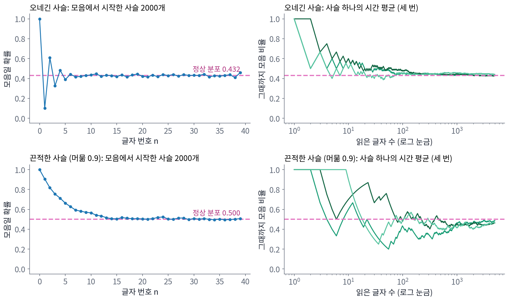
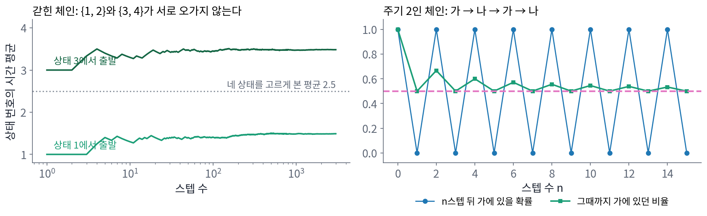

에르고드 정리: 독립 없이 성립하는 큰 수의 법칙
동전을 N번 던져 앞면의 비율을 세면, 그 비율은 1/2 근처로 모이고 비율의 표준편차는 1/√N에 비례해 줄어든다. 이 계산은 동전 하나하나가 서로 독립이라는 데 기댔지만, 마르코프의 체인으로 만든 글자는 모음 뒤에 모음이 잘 오지 않아서 서로 독립이 아니다. 그래도 2만 자를 세면 모음의 비율이 정상 분포의 값 0.432 근처로 모일까, 모인다면 모음 비율의 표준편차는 독립인 동전과 같을까? 1900년대 초 네크라소프와 마르코프가 다툰 것도 서로 기대는 사건의 평균이 모이느냐는 물음이었다.
역사: 볼츠만의 가정
같은 물음은 물리에서 먼저, 그러나 다른 모습으로 나왔다. 기체 상자 하나의 압력을 잴 때 실험가가 얻는 것은 한 상자를 일정한 시간 동안 지켜본 평균이다. 그런데 통계역학이 계산하는 평균은 에너지가 같은 모든 미시상태에 대한 평균, 곧 같은 상자를 무수히 많이 만들어 한순간에 모두 들여다본 평균이다. 볼츠만은 1870년대 무렵부터, 한 계가 오래 움직이는 동안 에너지가 같은 모든 상태를 고르게 거쳐 간다고 가정하면 두 평균이 같아진다고 보았다. 뒤에 에렌페스트 부부가 1911년의 글에서 이 가정에 에르고드 가설이라는 이름을 붙였고, 1931년과 1932년에 버코프와 폰 노이만이 어떤 조건에서 두 평균이 같아지는지를 정리로 증명했다.
시간 평균과 여러 체인의 평균
평균을 내는 두 방법을 나란히 놓아 보자. 하나는 체인 수천 개를 같은 상태에서 함께 출발시켜 n번째 글자에서 모음인 체인의 비율을 세는 것이고, 다른 하나는 체인 하나를 오래 돌리며 그때까지 나온 글자 가운데 모음의 비율을 세는 것이다. 여러 체인의 평균은 정상 분포로 가는 pₙ을 샘플로 잰 값이고, 한 체인의 시간 평균은 마르코프가 오네긴에서 실제로 한 일이다.

오네긴 체인 하나를 2만 자 돌리면 모음의 비율은 앞 10자에서 0.500, 100자에서 0.460, 1,000자에서 0.438, 20,000자에서 0.430이다. 글자들이 서로 영향을 주는데도 시간 평균은 정상 분포의 값으로 간다는 사실을 일반적으로 적으면 다음과 같다. 체인이 갇힌 곳 없이 모든 상태 사이를 오갈 수 있으면, 어떤 함수 f를 체인 위에서 오래 평균한 값은 출발점과 상관없이 그 함수를 정상 분포로 평균한 값으로 간다.
체인 하나의 시간 평균이 정상 분포에 대한 평균으로 모인다는 사실을 에르고드 정리 (시간 평균 = 분포 평균, ergodic theorem)라 한다. 왼쪽은 체인 하나를 오래 본 평균이고 오른쪽은 정상 분포에 대한 평균이다. 독립을 요구하지 않는 큰 수의 법칙인 셈이고, 마르코프가 네크라소프에게 보인 것이 바로 이 꼴이다.
모음 비율이 모이는 곳은 0.432로 같아도, 모음 비율의 표준편차는 체인마다 다르다. 길이 1,000자인 글을 2,000편 만들어 모음 비율의 표준편차를 재면, 오네긴 체인은 0.0088이고 같은 0.432의 확률로 따로따로 던진 동전은 0.0157이다. 모음과 자음이 번갈아 오려는 글은 모음이 많이 나온 뒤에 자음이 나와 메워 주기 때문에 비율이 오히려 덜 흔들린다. 반대로 같은 상태에 머무르려는 체인에서는 비율의 표준편차가 커지는데, 얼마나 커지는지는 아래 문제 8에서 직접 재어 보자.
정리가 성립하지 않는 두 경우
에르고드 정리에는 「갇힌 곳 없이 모든 상태 사이를 오갈 수 있으면」이라는 조건이 붙어 있었다. 상태 1과 2 사이만 오가고, 상태 3과 4 사이만 오가는 체인을 생각해 보자. 상태 번호의 시간 평균은 상태 1에서 출발하면 1.5로, 상태 3에서 출발하면 3.5로 간다. 이런 체인에는 정상 분포가 하나가 아니다. (1/2, 1/2, 0, 0)도, (0, 0, 1/2, 1/2)도, 그 둘을 섞은 것도 모두 한 스텝 뒤에 그대로이기 때문이다. 어느 것으로 평균을 내야 할지 정해지지 않으니, 시간 평균은 출발점이 고른 쪽에 머문다.
조건을 하나 더 붙여야 하는 경우도 있다. 상태 가와 나를 반드시 번갈아 오가는 체인은 가에서 출발하면 짝수 스텝에는 가에, 홀수 스텝에는 나에 있다. n스텝 뒤 가에 있을 확률은 1, 0, 1, 0, …으로 끝내 한 값으로 모이지 않는다. 그런데 가에 머문 시간의 비율은 1000스텝이면 0.5000으로 정상 분포 (1/2, 1/2)의 값으로 간다. 주기가 있으면 처음을 잊는 성질은 깨지지만 시간 평균은 깨지지 않는다. 오네긴 체인에서 모음일 확률이 0.128, 0.595, 0.345, …로 출렁이며 0.432에 다가갔듯이 pₙ 자체가 정상 분포로 가려면 「갇힌 곳이 없다」에 더해 「주기가 없다」는 조건이 있어야 한다.

ML에서: 왜 여러 체인을 함께 돌릴까?
베이즈 학습에서 사후분포의 평균을 낼 때는 샘플러를 한 번 길게 돌려 그 시간 평균을 쓴다. 에르고드 정리가 그 평균을 믿을 근거다. 그런데 실제 분포에는 골짜기가 깊어 사실상 오가지 못하는 봉우리가 있을 수 있고, 그러면 체인은 갇힌 체인처럼 처음 들어간 봉우리의 평균을 조용히 내놓는다. 겔먼과 루빈(1992)이 서로 다른 곳에서 출발한 체인 여러 개를 함께 돌려, 체인 사이의 평균 차이가 체인 안의 분산보다 크면 아직 믿지 말라는 진단을 내놓은 것도 이 때문이다. 지금도 샘플링 도구들은 체인을 넷쯤 함께 돌리고 이 진단값을 함께 보여 준다.
문제 7. 하루걸러 운동하는 친구
민준이의 친구는 헬스장에 간 다음 날은 반드시 쉬고, 쉰 다음 날은 반드시 간다. 오늘 헬스장에 갔다. (가) 100일 뒤에 헬스장에 있을 확률은 1/2에 가까운가? (나) 앞으로 1년 동안 헬스장에 간 날의 비율은 얼마에 가까운가?

이런 건 주기가 있는 체인이잖아요. 주기가 있으면 에르고드 정리가 안 통하니까 (나)도 정해진 값이 없는 거 아니에요?

(가)부터 봐요. 100일 뒤의 확률은요?

짝수 날마다 가니까, 100일 뒤는 짝수 날이라 반드시 가요. 확률은 1이에요. 1/2은커녕 1이요.

그럼 1년 동안 간 날의 비율은요?

365일 가운데 오늘부터 하루걸러 가니까 183일이고, 비율은 0.501이네요. 1/2로 가요. 어, 그럼 주기가 있으면 안 통한다던 제 말은….

(가)에서는 1/2로 가지 않았고 (나)에서는 갔어요. 두 물음은 무엇을 묻고 있죠?

(가)는 100일째 하루, (나)는 1년 전체의 평균이요. 아, 처음을 잊지 못하는 것과 시간 평균이 모이지 않는 건 다른 얘기였어요. 주기가 깨는 건 처음을 잊는 성질뿐이에요.

그래요. 「n일 뒤 어디에 있나」는 주기 때문에 끝까지 오늘에 묶여 있지만, 「오래 보면 얼마나 자주 있나」는 주기와 상관없이 정상 분포를 따라가요. 갇힌 곳만 없으면요.

수열에서 1, 0, 1, 0, …은 수렴하지 않지만 앞에서부터의 평균은 1/2로 수렴하는 거랑 같네요. 체사로 평균을 배울 때 본 예예요.
문제 8. 끈적한 체인에서 비율의 표준편차
머무를 확률이 0.9이고 옮겨 갈 확률이 0.1인 두 상태 체인이 있고, 정상 분포는 반반이다. (가) 이 체인을 1,000스텝 돌려 상태 1에 머문 비율을 낼 때, 그 비율의 표준편차는 얼마쯤인가? 같은 길이로 동전을 던진 경우와 견주라. (나) 동전 1,000번과 같은 정도로 흔들리게 하려면 체인을 몇 스텝 돌려야 하는가? (풀어 본 뒤 위젯 2의 「끈적한 체인」으로 시간 평균이 모이는 모습을 보자.)
표준편차는 √(p(1 − p)/N)이니까 √(0.25/1000) = 0.0158이요. 정상 분포가 반반이니까 동전이랑 같아요.
√(p(1 − p)/N)은 1,000번이 서로 독립일 때의 식이에요. 2,000번 돌려서 직접 재 봤어요?

돌려 보니까… 0.0477이에요. 동전의 세 배가 넘어요.
한번 상태 1에 들어가면 평균 10스텝을 머무니까, 1,000스텝이라도 실제로는 덩어리 백 개쯤을 본 셈이잖아. 그래서 비율의 표준편차가 큰 거야.
덩어리로 보는 감각이 좋아요. 정확히 계산하면 상태가 둘인 체인에서 분산은 독립일 때의 (1 + λ)/(1 − λ)배예요. λ는 두 번째 고윳값, 여기서는 0.9 − 0.1 = 0.8이죠.

(1 + 0.8)/(1 − 0.8) = 9니까 분산이 9배, 표준편차가 3배예요. 0.0158 × 3 = 0.0474로 민준이가 잰 0.0477과 맞아요.
그럼 (나)는요?

분산이 9배니까 9배 길게 돌리면 되겠네요. 9,000스텝이요.
오네긴 체인은 λ = −0.535라 이 배수가 0.303이었으니까, 동전보다 덜 흔들렸던 거네요.

출석을 한 학기 매일 부르는 거랑 같네요. 같은 학생이 몇 주 내리 결석하면 날수가 많아도 실제로는 몇 번 안 본 거니까요.
문제 9. 체인 넷을 돌려 보니
상태 1·2와 상태 3·4가 아주 가끔(한 스텝에 0.0001의 확률로)만 서로 넘어가는 네 상태 체인이 있다. 넘어가는 확률은 양쪽이 같아서 정상 분포는 네 상태에 고르게 1/4씩이고, 상태 번호의 평균은 2.5다. (가) 상태 1에서 출발한 체인 하나를 1,000스텝 돌린 시간 평균은 얼마에 가까울까? (나) 상태 1, 2, 3, 4에서 하나씩 출발한 체인 넷을 1,000스텝씩 돌리면 무엇을 알 수 있나?
에르고드 정리가 있으니까 1,000스텝 돌리면 정상 분포의 평균 2.5 근처가 나오겠죠. 넘어가는 길이 아예 없는 것도 아니니까요.
한 스텝에 0.0001이면, 1,000스텝 동안 반대쪽으로 넘어가는 횟수는 평균 몇 번이에요?

0.1번이요. 10번 돌리면 9번은 한 번도 안 넘어가겠네요. 2,000번 돌려 보니 91%가 한 번도 안 넘어갔고, 시간 평균의 중앙값이 1.50이에요. 정리는 맞는데 1,000스텝이 「오래」가 아니었던 거예요.

그럼 (나)에서 체인 넷은 대개 1이나 2에서 출발한 둘이 1.5 근처, 3이나 4에서 출발한 둘이 3.5 근처를 내놓겠네요. 체인 하나만 봤으면 1.5를 믿었을 텐데, 넷을 나란히 놓으니까 서로 안 맞는 게 보여요.
그래요. 체인 넷의 값이 서로 크게 다르면, 각 체인이 아직 정상 분포를 다 돌아보지 못했다는 신호예요. 이 체인도 100만 스텝을 돌리면 시간 평균이 2.46으로 2.5에 다가가요. 반대로 넷이 맞는다고 해서 모두가 함께 갇혔을 가능성을 지우지는 못해요. 출발점을 일부러 멀리 흩어 놓는 것도 그 때문이에요.
설문을 한 반에서만 돌리면 그 반 분위기가 학교 전체인 줄 알게 되잖아요. 반 네 곳에 돌려 보면 적어도 반마다 다르다는 건 알 수 있고요.